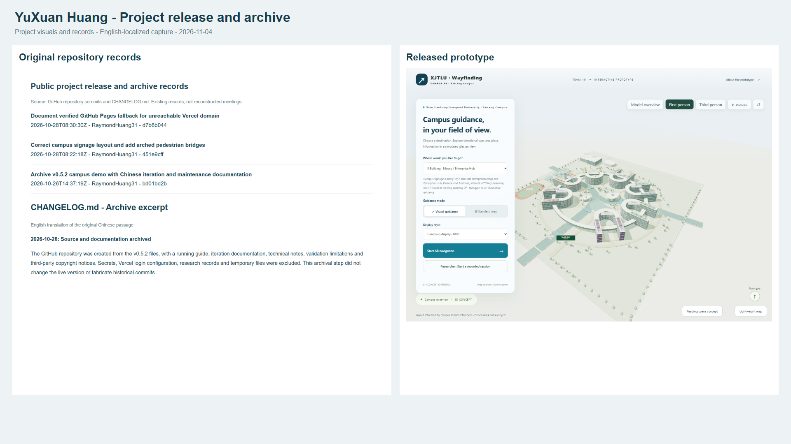
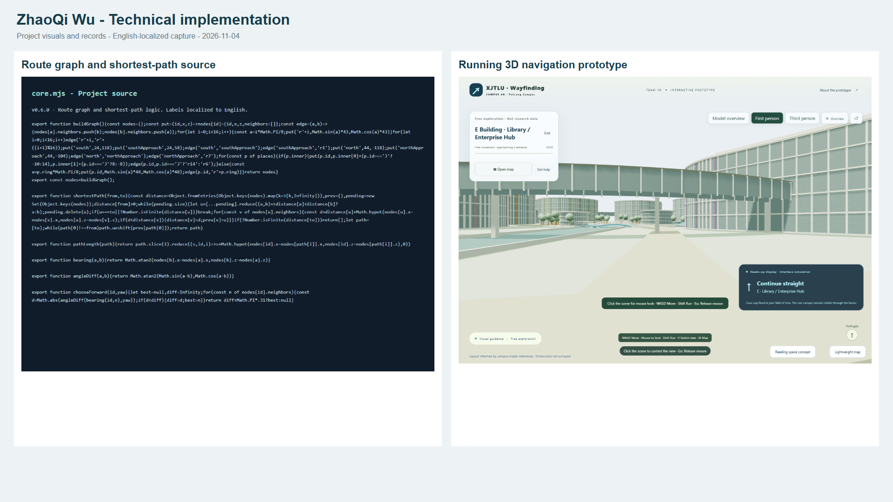
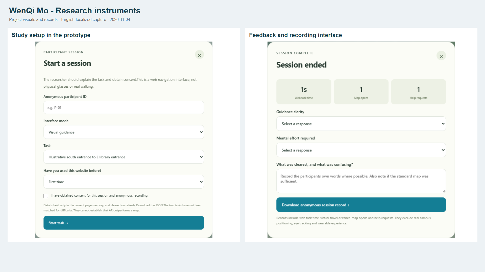
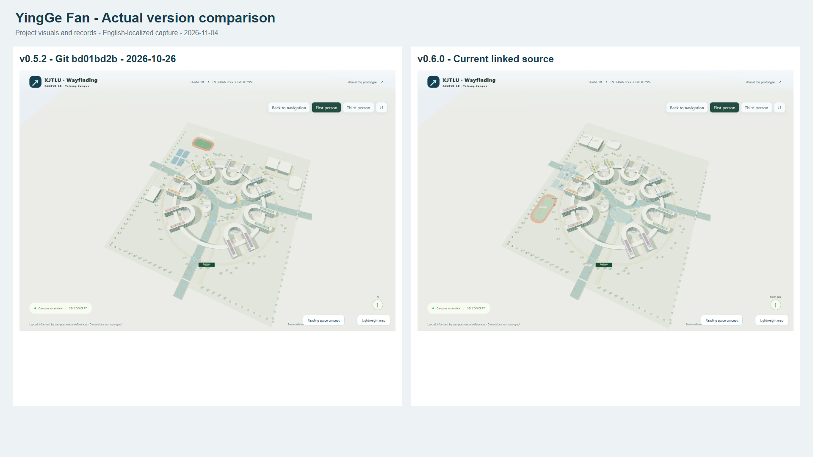
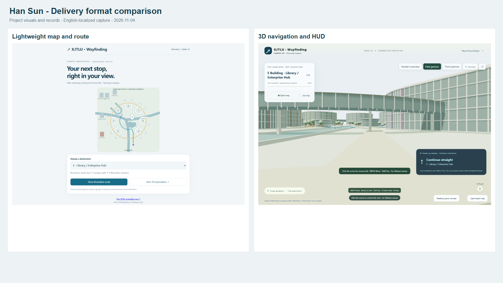
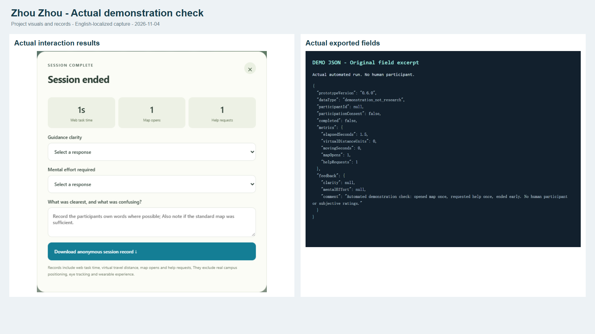

English-language project screenshots. Sources and attribution
Project release and archive

Technical implementation

Research instruments

Actual version comparison

Delivery format comparison

Actual demonstration check
